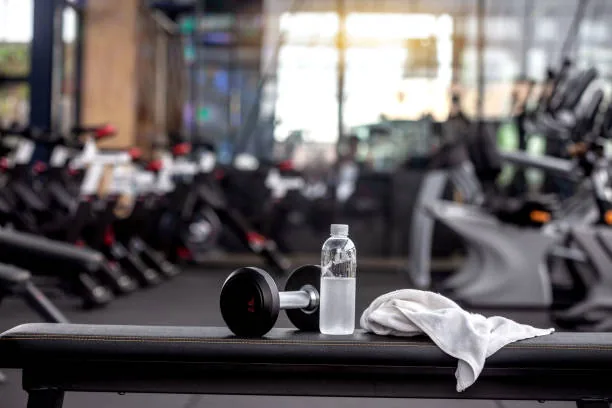
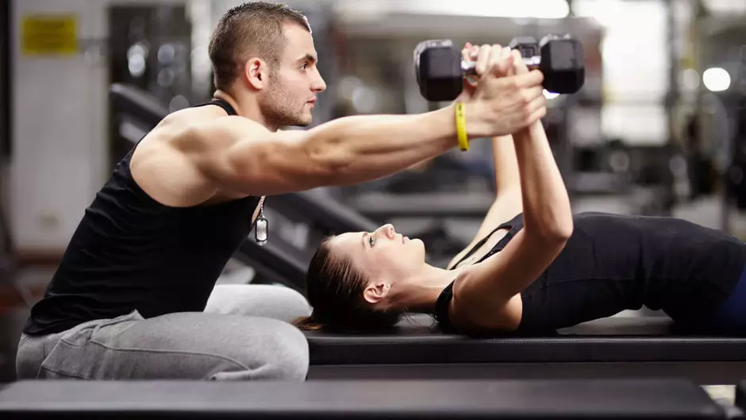

Centro de Treinamento
O Seu Shape Começa Aqui!
LOGINO Seu Shape Começa Aqui!
LOGINA LDL Fitness é o território de quem não aceita desculpas. Unimos a força bruta do treino raiz com a precisão da ciência esportiva. Aqui, você não é apenas mais um aluno; você é parte da matilha que busca a excelência física e mental todos os dias.
O que começou com um par de halteres e a determinação do Coach Lucas, transformou-se na LDL Fitness. O nome carrega o peso da nossa trajetória: Lealdade, Disciplina e Luta. Evoluímos de um estúdio personalizado para um centro de performance que é referência em resultados reais e transformações de impacto.

Treine com quem entende.
O nosso Coach oferece dois protocolos exclusivos focados no seu objetivo para garantir o máximo de eficiência na sua evolução.
Foco total em volume muscular e densidade, utilizando métodos de falha concêntrica e periodização de força. Ideal para hipertrofia bruta.
Mix de musculação de alta intensidade com estímulos metabólicos para derreter gordura mantendo a massa magra e a extrema definição.

CREF 000000-G/SP
Referência em musculação competitiva e reabilitação física. Lucas acredita que o treino perfeito é aquele que desafia seus limites com técnica impecável. Especialista em levar pessoas comuns ao nível de atletas, com mais de 10 anos de experiência transformando físicos.
Pronto para sair da zona de conforto? Fale com a nossa equipe hoje mesmo.